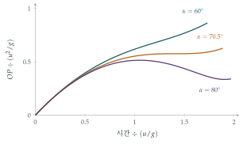

STEP II 2019, 문제 9
다음으로 넘어가기 전에 문제를 먼저 읽어 보자. 이 문제는 OCR에서 내려받을 수 있는 2019년 STEP 문제지 모음(zip 파일)의 STEP II 문제지에 있다: www.ocr.org.uk/Images/696590-2019-past-papers.zip
도입
공을 앞으로 던지면 공은 땅에 떨어질 때까지 던진 사람에게서 계속 멀어진다. 당연한 일이다. 공을 똑바로 위로 던지면 공은 다시 돌아온다. 그렇다면 그 사이 어딘가에서 무언가가 바뀌어야 한다. 즉 공이 멀어지다가 가까워지고, 땅에 떨어지기 전에 다시 멀어지는 각도가 있어야 한다. 이 문제는 그 정확한 경계값 \(\sin\alpha = \frac{2\sqrt2}{3}\), 곧 약 \(70.5^\circ\)를 찾는다.
이 결과는 수학에서 흔히 볼 수 있는 상황의 좋은 예이다. 모두가 단조(monotonic)라고 생각하는 양이 실제로는 단조가 아닌 경우이다. 또한 대학에서 늘 쓰이는 표준 기법도 보여 준다. 거리가 증가하는지 알아보려면 거리의 제곱을 미분(differentiate)하면 되는데, 이렇게 하면 제곱근을 피할 수 있다.
시작하기 전에
왜 \(OP\)보다 \(OP^2\)을 다루는 것이 더 쉬울까? “\(OP\)가 증가한다”는 것은 “\(OP^2\)이 증가한다”는 것과 같은가?
\(OP^2 = x^2 + y^2\)은 \(t\)에 대한 다항식(polynomial)이지만, \(OP\)에는 제곱근이 들어 있다. \(OP \geq 0\)이고 제곱하는 함수는 음이 아닌 수에서 증가하므로, \(OP\)는 \(OP^2\)이 증가할 때 정확히 그때에만 증가한다.
차근차근 풀기
단계 1 거리의 제곱
\(x = ut\cos\alpha\), \(y = ut\sin\alpha - \frac12gt^2\)이므로 \[OP^2 = u^2t^2\cos^2\alpha + u^2t^2\sin^2\alpha - ugt^3\sin\alpha + \tfrac14g^2t^4 = u^2t^2 - ugt^3\sin\alpha + \tfrac14g^2t^4.\]
\(t\)에 대하여 미분해 보자. 인수 \(t\)를 묶어 내면 무엇이 남는가? 그것은 언제 모든 \(t\)에 대해 양수인가?
\[\frac{\mathrm{d}}{\mathrm{d}t}OP^2 = 2u^2t - 3ugt^2\sin\alpha + g^2t^3 = t\bigl(g^2t^2 - 3ug\sin\alpha\,t + 2u^2\bigr).\] \(t > 0\)일 때 부호는 이차식(quadratic) \(g^2t^2 - 3ug\sin\alpha\,t + 2u^2\)의 부호와 같다. 이 이차식은 최고차항 계수(leading coefficient)가 양수이므로, 판별식(discriminant)이 음수이면 모든 \(t\)에 대해 양수이다. \[9u^2g^2\sin^2\alpha - 8u^2g^2 < 0 \quad\Longleftrightarrow\quad \sin^2\alpha < \frac89 \quad\Longleftrightarrow\quad \sin\alpha < \frac{2\sqrt2}{3}.\] 이 경우 \(OP\)는 비행하는 동안 내내 증가한다.■
단계 2 더 가파르게 던지기
\(\sin\alpha > \frac{2\sqrt2}{3}\)이면 이차식은 서로 다른 두 실근을 가진다. 두 근은 양수인가? 작은 근은 입자가 땅에 떨어지기 전인가?
두 근의 합은 \(\frac{3u\sin\alpha}{g} > 0\)이고 곱은 \(\frac{2u^2}{g^2} > 0\)이므로 두 근은 모두 양수이며, 두 근 사이에서 이차식, 따라서 \(\frac{\mathrm{d}}{\mathrm{d}t}OP^2\)은 음수이다. 입자는 \(T = \frac{2u\sin\alpha}{g}\)에 땅에 떨어진다. 작은 근은 \[t_1 = \frac{u}{2g}\bigl(3\sin\alpha - \sqrt{9\sin^2\alpha - 8}\bigr) < \frac{u}{2g}\cdot3\sin\alpha < \frac{2u\sin\alpha}{g} = T.\] 따라서 \(t_1\) 직후(그리고 땅에 떨어지기 전)에 \(OP\)는 감소한다.■

단계 3 움직이는 관찰자
\(Q\)는 지면을 따라 반대 방향으로 속력 \(v\)로 \(O\)에서 멀어진다. \(Q\)에서 재면 수평 거리는 \(x + vt\)이다. 이것은 계산에 어떤 영향을 주는가?
\(QP\)의 수평 성분은 \((u\cos\alpha + v)t\)이고 수직 성분은 \(ut\sin\alpha - \frac12gt^2\)이다. 따라서 \[QP^2 = \bigl((u\cos\alpha + v)^2 + u^2\sin^2\alpha\bigr)t^2 - ugt^3\sin\alpha + \tfrac14g^2t^4,\] 이는 첫째 항의 \(u^2\)을 \(w^2 = (u\cos\alpha + v)^2 + u^2\sin^2\alpha\)로 바꾼 것 말고는 앞과 같다. 도함수(derivative)는 \(t\bigl(g^2t^2 - 3ug\sin\alpha\,t + 2w^2\bigr)\)이고, 이것이 모든 \(t > 0\)에 대해 양수일 조건은 다음과 같다. \[9u^2\sin^2\alpha < 8w^2 \quad\Longleftrightarrow\quad u^2\sin^2\alpha < 8(u\cos\alpha + v)^2,\] 여기서 둘째 부등식은 양변에서 \(8u^2\sin^2\alpha\)를 소거하여 얻는다. 제곱근을 취하면(\(u\sin\alpha\)와 \(u\cos\alpha + v\)는 모두 양수이다) \(u\sin\alpha < 2\sqrt2(u\cos\alpha + v)\)이고, 이를 정리하면 \[2\sqrt2\,v > (\sin\alpha - 2\sqrt2\cos\alpha)u. \qed\] (이 조건이 성립하면 도함수가 모든 \(t > 0\)에 대해 양수이므로, 이는 \(QP\)가 비행하는 동안 내내 증가하기 위한 충분조건이다.)
돌아보기
제곱을 미분하라. 거리의 제곱은 다항식이고, 그 도함수는 거리의 도함수와 부호가 같다.
항상 양수인 이차식. “모든 시간에 대해 증가한다”는 조건이 판별식에 대한 조건이 되었다.
새 문제를 옛 문제로. 움직이는 관찰자는 계수 하나만 바꾸었으므로, 앞의 분석을 그대로 적용할 수 있었다.
숨은 수학
기하학적 관점
\(OP\)는 \(P\)의 속도(velocity)가 “안쪽”을 향할 때, 즉 벡터 \(\overrightarrow{OP}\)와 둔각(obtuse angle)을 이룰 때, 다시 말해 \(\overrightarrow{OP}\cdot\mathbf{v} < 0\)일 때 정확히 그때에만 감소한다. 가파르게 던지면 비행의 꼭대기 근처에서 입자는 던진 사람의 높은 위쪽, 약간 앞에 있으며, 거의 수평으로 멀어지고 있지만 떨어지기 시작한다. \(\overrightarrow{OP}\)의 방향을 기준으로 속도의 아래쪽 성분이 바깥쪽 성분보다 커지면 입자는 가까워진다. 완만하게 던지면 입자는 항상 충분히 앞쪽에 있으므로 속도가 \(O\) 쪽을 향하는 일이 결코 없다. 임계 경우는 속도가 정확히 한순간 \(\overrightarrow{OP}\)에 수직(perpendicular)이 되는 경우이며, 이때가 그림 11.10.1에서 거리가 멈추는 순간이다.
단조성은 저절로 주어지지 않는다
“당연히” 증가할 것 같은 많은 양이 실제로는 그렇지 않다. 지구와 달 사이의 거리는 진동한다. 구불구불한 길 위의 두 자동차 사이의 거리는 한 차가 항상 앞서 있더라도 줄어들 수 있다. 먹이가 늘어나는 동안에도 포식자의 개체 수는 줄어들 수 있다. 어떤 양이 단조임을 증명한다는 것은 보통 도함수의 부호가 일정함을 보이는 것이고, 여기서 쓴 기법(다항식으로 바꾼 뒤 그 근이나 판별식을 확인하는 것)이 이를 위한 표준적인 방법이다. 해석학(analysis)에서 단조성은 수렴(convergence)을 증명하는 열쇠가 되는 경우가 많다. 2장에서 보았듯이, 유계(bounded)인 단조 수열(sequence)은 수렴한다.
사고 기술
어떤 양이 항상 증가하는지 판단하려면, 그 양(또는 그 제곱처럼 다루기 편한 그 양의 함수)을 미분하고, 도함수의 부호가 바뀔 수 있는지 물어보라.
대학에서는 이런 종류의 부호 논증을 부등식을 증명하고, 최댓값과 최솟값을 찾고, 미분방정식(differential equation) 해의 안정성(stability)을 연구하는 데 쓴다. 미분방정식에서는 항상 감소하는 양이(8.2 절에서처럼) 계가 안정된 상태로 정착함을 증명해 준다.
더 도전하기
얼마나 가까워지는가? \(\alpha = 80^\circ\)일 때 \(OP\)가 극대와 극소가 되는 시각과 그때의 거리를 \(u^2/g\) 단위로 구하라.
경사면 위에서. 수평면과 각 \(\beta\)를 이루는 경사면 위쪽으로 공을 던져 경사면에 떨어지는 경우에 대하여 (i)번 문항을 다시 풀어라. (경사면으로부터 잰) 임계각은 달라지는가?
공기 저항이 있을 때. 공이 속도에 비례하는 저항도 받는다고 하자. 계산하지 않고, 임계각이 \(70.5^\circ\)보다 클 것이라고 예상하는가, 작을 것이라고 예상하는가? 그 이유는 무엇인가?
높은 곳에서 던지기. 공을 절벽 꼭대기에서 던져 훨씬 아래에 떨어진다면, 어떤 각도로 던지든 \(OP\)가 결국에는 증가함을 보이고, 어느 단계에서 \(OP\)가 감소하는 각도가 있는지 알아보라.
더 읽을거리
James Walker, The Flying Circus of Physics (Wiley). 일상에서 만나는 놀라운 물리 퍼즐 수백 개를 담고 있다.
David Morin, Introduction to Classical Mechanics (Cambridge University Press), 3장. 포물체(projectile)를 다루며, 직관에 어긋나는 문제가 여러 개 있다.
J. M. Steele, The Cauchy–Schwarz Master Class (Cambridge University Press). 어떤 것이 다른 것보다 항상 크다는 것을 증명하는 기술을 다룬다.